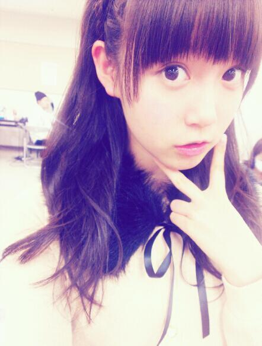

千葉個握(・∀・)！
.
来てくださった方ありがとうー

えっとー
初編み込み♪
の下ろしくるくる♪
前髪切ってもらてすっきり♪
どうでしょうか∩^ω^∩
あははーあんまし写ってないねー
なんとなく伝わればいっかなー
なんで編み込んでみたかってゆーと
単純にりぼんを忘れたからです←
ほんとは結ぼうかなーとか
思ってたんだけれども
忘れちゃったの。そゆこともある。
でも編み込みやってみたかったんだー
好評で嬉しかった！
からの全身写真撮るの忘れたー笑
雰囲気を伝えると
Tops:茶色のカーディガン+ふわふわ
Bottoms :紺地×白のドットスカート
どっちも
MILSQUR
ってお店です(^^)
ちょっとお姉さんな感じに
仕上がってます！
ままセレクトですん
ってこの記事は
帰りの車ん中で書いてるんだけれども
右隣で
いくちゃん
(生田絵梨花chan)が寝てて
左隣で
みさみさ
(衛藤美彩chan)が
寝てるーんるんっ
いくちゃんには肩を貸してるー
さっすがひめ姉でしょー
いくちゃんは今でもたまに
ひめ姉ーって呼んでくるね＊
いくちゃんだけだよー
ひめたんはいくちゃんより
9か月お姉さんなのね(｀・ω・´)えへん
あっちなみに朝は
LIZLISA
のセールに行ってきたー
お財布をね買ったの！長財布！
ちなみに前は
W C
ってとこのだったよー
でもチョコのアイスついちゃって
茶色いシミがとれないから
ずっと変えたかったの(ω)
あっ課題もちょっとやったよ！
3問くらい解いた！
それから楽屋でも課題やってたんだよー
まだ終わんないけどねー
明日もあるから大丈夫だよー
それから
今週中に
ろってぃ
(川村真洋chan)と
カラオケいくことなった！
ずっとゆってたからなー楽しみ♪
あみ
(能條愛未chan)とみさみさも
来ることになったよー
しっかしまー
見事に歌のうまいメンツが
揃ったもんだね！
(＊´・ω・＊)ひめたん